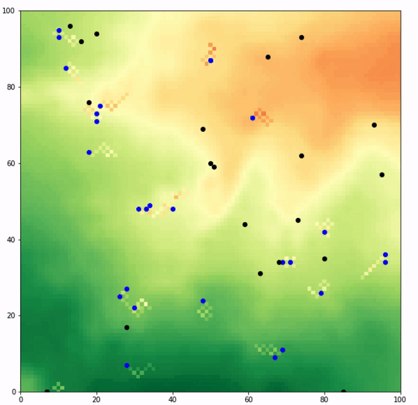
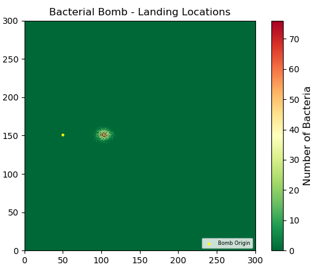

Biography
 I currently work as a GIS analyst within the nuclear industry and I have been in this role for the last 2.5 years. The GIS team I am part of undertakes work which supports key strategic and tactical decisions for a very spatially constrained site. My day to day work involves heavy usage of GIS related software such as ArcMap, ArcPro and FME desktop.
I currently work as a GIS analyst within the nuclear industry and I have been in this role for the last 2.5 years. The GIS team I am part of undertakes work which supports key strategic and tactical decisions for a very spatially constrained site. My day to day work involves heavy usage of GIS related software such as ArcMap, ArcPro and FME desktop.
Before gaining my current role, I had virtually no GIS experience. Due to this, most of my GIS knowledge has been self taught via online materials. In 2018, I undertook an MSc in GIS at the University of Leeds in order to boost my technical development and transfer my current knowledge and experience into a tangible qualification. I am currently half way through this 3 year course and have so far enjoyed the technical challenges that it has presented. Outside of work circles I am a keen golfer, football enthusiast and festival goer,
Career Aim
My immediate career focus is concentrated on graduating my MSc in GIS in 2021. After this, I am looking to become a chartered geographer with the AGI.
Course Work Portfolio
Please feel free to have a look at some of the work I have submitted towards my Masters degree. If you have any questions/ suggestions please don't hesitate to contact me using the provided details.
GIS and Python
Population Model
This python program simulates predator prey dynamics within a spatial domain. In this scenario these two competing agents have been defined as that of sheep and wolves. These agents move randomly around a defined environment, reproduce and share resources with one another. This project can be downloaded here.
.
Bacterial Fallout Model
This project models the potential resulting fallout from a bacterial bomb. This program releases a defined amount of particles within a domain and lets them move within three dimensions based on user defined wind probabilities. The landing location of each of these bacteria are recorded and output to a csv file. This project can be downloaded here.
.